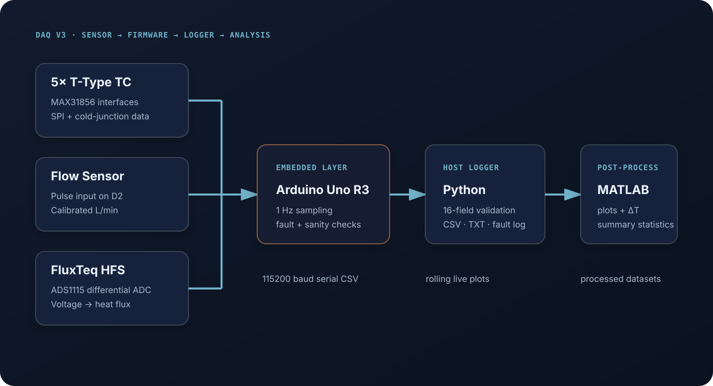

One measurement system for the entire experiment
The freeze-desalination apparatus requires synchronized thermal, hydraulic, and heat-transfer measurements. I developed the DAQ so the experiment could be operated from one acquisition platform instead of relying on independent instruments with separate timestamps and data formats.
The design goal was not simply to read sensors. It had to remain easy to calibrate, expose hardware faults immediately, reject corrupted values, preserve raw data, and produce files that could move directly into analysis.
Multi-channel temperature
Read five T-type thermocouples while retaining MAX31856 cold-junction and diagnostic information.
Low-level heat flux
Resolve the FluxTeq sensor's microvolt-scale signal through differential ADS1115 acquisition and averaging.
Calibrated flow
Convert pulse frequency into corrected volumetric flow rate for the circulating water loop.
Reliable logging
Detect invalid data before it enters the experimental dataset and keep faults separate from measurements.
Sensor to analysis pipeline
The current DAQ uses the Arduino Uno as the synchronization layer. Thermocouple converters share the SPI bus with independent chip-select lines, the flow sensor uses an interrupt input, and the heat-flux sensor is measured differentially through an ADS1115. The Arduino outputs one structured serial record each sample, which is validated and logged on the host computer before post-processing.

T-type thermocouple interfaces on the Uno SPI bus with independent chip-select lines.
Differential A0–A1 measurement of the FluxTeq sensor with high gain and 32-sample averaging.
Pulse counting over the one-second sample interval followed by the experimental calibration correction.
Structured CSV-style records carrying measurements, cold-junction values, sensor voltage, sensitivity and heat flux.
Turning raw sensor output into usable engineering data
Calibration is handled at the measurement source whenever practical. Each thermocouple channel has an independently stored temperature offset, the flow sensor uses a linear correction from the previous calibration, and the heat-flux calculation applies sensor zero offset and temperature-dependent sensitivity before converting voltage into heat flux.
Corrects the pulse-derived flow measurement to the calibrated L/min response.
Uses the measured microvolt signal, zero offset, and temperature-dependent sensitivity.
Averages repeated differential ADC reads before the heat-flux calculation to reduce short-period noise.
Applies a separate calibration offset to each thermocouple channel.
Making bad data fail loudly
The most important development work was making the system distinguish a real experimental change from a sensor or communication fault. MAX31856 faults such as open thermocouples, cold-junction limits, thermocouple range errors, and over/under-voltage conditions are decoded by the firmware and reported as diagnostic messages instead of being mixed into the measurement stream.
A second layer of sanity checks rejects corrupted readings before output. The Python logger then performs its own validation, requiring a fresh Arduino header, exactly 16 numeric fields, finite values, and plausible ranges for flow, thermocouple and cold-junction measurements.
Hardware fault decode
Read and identify MAX31856 fault registers before accepting a sample.
Firmware sanity check
Reject implausible thermocouple or cold-junction values instead of serializing them.
Host validation
Reject malformed, nonnumeric, nonfinite, or out-of-range rows in Python.
Separate fault log
Preserve startup, error, and fault messages with timestamps for later troubleshooting.
Time · Flow · TC1–TC5 · CJ1–CJ5 · HFS V · HFS µV · HFS sensitivity · Heat FluxLive feedback during the test, deeper analysis afterward
The host-side Python logger writes synchronized CSV and text files while maintaining a separate fault log. A rolling live window plots the five temperature channels, flow rate and heat flux so abnormal behavior can be identified while the experiment is still running.
After the run, the MATLAB analysis workflow maps the channels to physical measurements, optionally trims a test interval, calculates summary statistics and temperature differences, plots thermal/flow/heat-flux histories, reviews cold-junction behavior, and exports processed datasets with named channels.
Serial validation · rolling plots · CSV · TXT · timestamped fault log
Channel mapping · ΔT calculations · summary statistics · processed export
Integrated into active freeze-desalination experiments
DAQ V3 is now part of the proof-of-concept freeze-desalination setup and is being used while the apparatus is refined with tap-water experiments. The current build focuses on dependable acquisition and diagnostics; active pump modulation remains a planned expansion rather than a feature of the present firmware.
Next development focuses on cleaner packaging, continued calibration validation, and eventual pump PWM integration for controlled flow experiments.